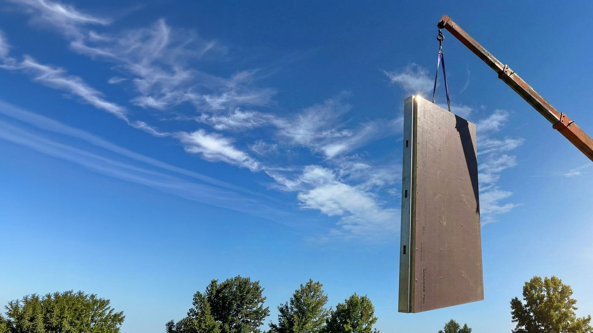

From Our Factory Floor · Hayward, CAEvery 4C panel is engineered and assembled at our facility at 2447 Industrial Parkway in Hayward, right in the heart of the East Bay. For most California markets, that means a truck trip of several hours or more before a panel reaches the site. For Bay Area projects, from Oakland and Fremont to San Jose, San Francisco, and the North Bay, it can mean a same-day run from our production floor to your jobsite.
That proximity isn’t just shorter freight, it’s shorter lead times and in-person support from the same team that built the panel, without the quality risk of a system engineered somewhere else and shipped in.
Every panel leaving our Hayward floor, 4C SAFE® and 4C ECO™ alike, is ICC-ES listed and patent pending, built to the same certified specification whether it travels two miles or two hundred.
Every 4C panel is engineered and assembled at our facility at 2447 Industrial Parkway, Hayward, CA 94545. For most other California markets, that means a truck trip of several hours or more. For Bay Area projects, it can mean a same-day run from our production floor to your site. See our full California coverage map to compare freight distance from Hayward to other regions we serve.
Panels don't have to travel far to reach a Bay Area site, which simplifies delivery scheduling and reduces the freight cost built into your project budget.
Our team can walk your jobsite without a long drive, and you're welcome to visit the Hayward facility to see your panels in production before they ship.
Proximity to the factory means fewer logistics variables between design sign-off and panels arriving on site, a real advantage for architects and builders working on tight schedules.
The Bay Area's construction costs are among the highest in the country, and much of the region's new housing and commercial work is infill: tight urban and suburban lots where efficient use of labor and schedule matters as much as the design itself. Keeping cost, carbon, complexity, and compliance in balance on projects like these is exactly what drives our mission as a manufacturer.
Wood-framed, Type V panels built for budget-disciplined infill and multifamily work.
Steel-framed, non-combustible panels for wildfire-exposed hillside terrain.
The East Bay and North Bay hills, along with other wildland-adjacent communities around the region, carry well-documented wildfire exposure. If your Bay Area site sits in or near that kind of terrain, 4C SAFE® is worth evaluating alongside 4C ECO™. Talk to our team about which system fits your parcel.
We haven't published a completed Bay Area project yet. We're a young company and this is our home market, so we're building our local track record deliberately rather than rushing it. In the meantime, our project portfolio shows completed work in Los Angeles and San Diego County that reflects the same process you'd go through here. Here's what working with us actually looks like.
Send us your architectural drawings as they stand. No redesign is required: our engineering team reviews your existing plans for panelization.
We help you choose between 4C SAFE® and 4C ECO™ based on your site conditions, budget, and construction type. Your architect or GC leads this step since we work through partners, not directly with homeowners.
Panels are engineered and manufactured at our Hayward facility, pre-labeled and sequenced for assembly.
Because your site is likely within the greater Bay Area, delivery scheduling is simpler and freight costs are lower than for our more distant markets, which also reduces the transportation footprint we track as part of our sustainability commitments.
Panels arrive ready to assemble with no heavy equipment required, and our team is a short drive away if your crew needs support.
Yes. The San Francisco Bay Area is 4C's home market: components are manufactured at our Hayward, CA headquarters and delivered factory-direct to Bay Area architects, developers, and builders with faster turnaround and local support.
Our facility is at 2447 Industrial Parkway, Hayward, CA 94545, in the East Bay. Bay Area projects are typically the shortest haul from our production line to your jobsite.
Not yet publicly listed. The Bay Area is our home market and we're actively working with local architects, developers, and builders to bring our first Bay Area projects to completion. Our current delivered work is featured on our projects page, and we'll add Bay Area builds as they wrap.
Yes. Shorter hauls mean lower freight cost, easier scheduling around delivery windows, and it's simple for our team to visit your site or have you visit our Hayward facility during production.
We work across the wider Bay Area, including the East Bay, Peninsula, South Bay, and North Bay, from our Hayward facility. Being centrally located in the East Bay keeps travel times reasonable to most of the region.
No. We sell exclusively through partners, architects, GCs, developers, and material vendors, rather than direct to homeowners. If you're a homeowner in the Bay Area, your design or construction professional would specify 4C panels on your project.
We're a young company, and our first completed projects happened to be in Los Angeles and San Diego County through early partner relationships there. We're now actively building relationships with Bay Area architects, developers, and builders and expect local projects to follow.
Yes. 4C ECO™'s wood-framed, Type V construction is well matched to ADUs and small multifamily infill, which are a growing share of Bay Area housing production given how limited buildable land is in the region.
Talk to our Hayward-based team about specifying 4C SAFE® or 4C ECO™ on your next Bay Area project.